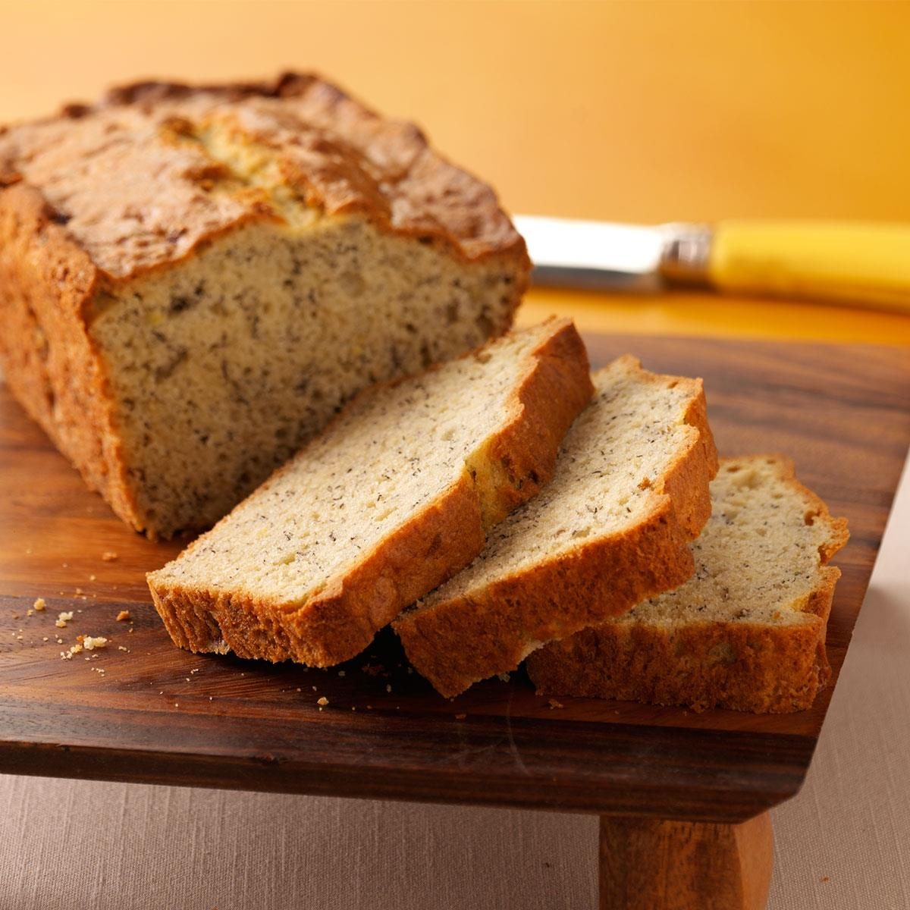

Banana Bread

Description
Delicious and moist banana bread recipe that any little one would love!
Ingredients
- 1 Stick (½ Cup) Butter
- 3 Large Ripe Bananas
- 2 Large Eggs
- 1 Teaspoon Vanilla Extract
- 2 Cups All Purpose Flour
- 1 Cup Granulated Sugar
- 1 Teaspoon Baking Soda
- ½ Teaspoon Salt
- ½ Teaspoon Cinnamon
Instructions
- Preheat oven to 350 degrees. Spray a loaf pan with non-stick cooking spray or grease with butter and set aside.
- Add the stick of butter to a large bowl and microwave for 1 minute, or until melted.
- Add the bananas to the same bowl and mash with a fork.
- Add the vanilla extract and egg to the bowl and use the same fork to mash and stir until no yellow streaks of egg remain.
- In a second large bowl whisk together the flour, sugar, baking soda, salt, and cinnamon.
- Add the dry ingredients to the wet ingredients and mix together with a spatula just until combined.
- Pour the batter into prepared loaf pan and bake for 45-55 minutes until a toothpick inserted in the center of the bread comes out clean.